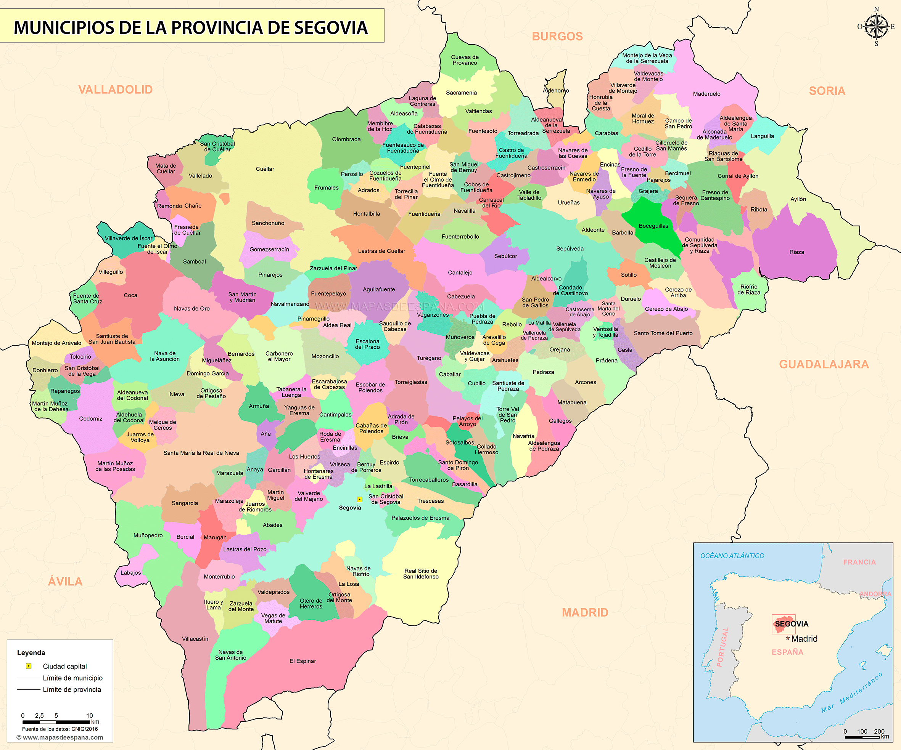
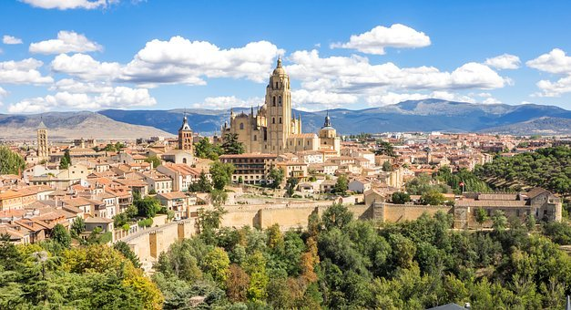

PROVINCIASAVILABURGOS LEON PALENCIA SALAMANCA SORIA VALLADOLID ZAMORA ENLACES EXTERNOS VOLVER AL INCIO |
SEGOVIAÍNDICE
1. LOCALIZACIÓNSegovia se encuentra al sureste de la comunidad 2. LOCALIDADES PRINCIPALESPrincipales ciudades:Segovia, Cuéllar, El Espinar, La Granja de San Ildefonso, Cantalejo, San Rafael y Coca Ubicacion de Segovia capital: 3. GEOGRAFÍA DE LA PROVINCIACoordenadas geograficas: Latitud: 40.9494, Longitud: -4.11921, 40° 56′ 58″ Norte, 4° 7′ 9″ Oeste Superficie: 16.359 hectáreas, 163,59 km² Altitud:1015 m Clima: mediterraneo Tiempo actual de Segovia: 4. HISTORIASabemos, gracias a distintas fuentes arqueológicas, que hubo presencia neardental en la zona desde la prehistoria, pero el primer pueblo reconocido que se asienta en esta zona fue el celta. Más concretamente, se asentaron en el cerro en el que hoy se encuentra el Alcázar de la ciudad. Si bien el origen la ciudad es, por tanto, más antiguo, se podría empezar a considerar a Segovia como una ciudad importante desde la llegada a ella de los romanos, hace aproximadamente unos 2000 años. Toda esta zona tuvo una influencia romana importante, lo que hace que hoy en día tengamos una gran cantidad de testigos de aquella época, como pueden ser las dos calzadas romanas que confluyen en nuestra ciudad y, claro está, el acueducto. Tras la caída del Imperio Romano, los visigodos son los que se asentaron en Segovia, dejando amplias muestras de su paso, que hoy se pueden encontrar en el Museo de la ciudad. Durante este periodo, se mantuvieron muchos edificios tanto romanos como visigodos, muchos de los cuales sirvieron luego de cimientos para varios templos románicos, como Duratón, Madrona, Castiltierra, o Requijada. La ciudad fue abandonada tras la rápida conquista por parte de los musulmanes en el siglo VIII. Se produjeron también en este siglo diversas guerras civiles entre bereberes y árabes, lo que hace que los bereberes abandonen el norte y centro peninsular. Esto, unido a varias incursiones del Rey Alfonso I de Asturias, hacen que la predominancia en la zona deje de ser musulmana. En el siglo IX, ya bajo bandera cristiana, se realizó un intento de repoblación en la ciudad por parte del conde castellano Fernán González, pero no tuvo un gran éxito, debido a las expediciones de Almanzor. A partir del XI sí se consiguió repoblar la zona, principalmente con pobladores gallegos, leoneses, asturianos, riojanos, vizcainos y franceses, motivo por el cual se conserva hoy día un gran patrimonio románico. Se trató esta de una época de un importante esplendor económico, gracias al éxito de la industria pañera. El éxito de la repoblación de estas zonas fue en parte debido a un sistema económico hasta entonces inédito, basado en los fueros y exenciones tributarias, es decir, privilegios fiscales. La población principal se denominaba Villa, y a los terrenos circundantes eran denominados Tierra. Así Segovia estuvo formada por las Villa y Tierra de Segovia, Pedraza, Sepúlveda, Fresno, Fuentidueña, Maderuelo, Ayllón, Coca y Cuéllar. Estos fueros los aprobó Alfonso VI. Uno de los momentos más importantes de la historia de Segovia fue el final de la Edad Media, durante el cual aumentó considerablemente su población y la de los alrededores, fue sede de una importante comunidad judía, puso las bases de su industria pañera, y fue corte de reyes de la Casa de los Trastámara. Aquí además, por aclamación popular, Isabel la Católica fue proclamada Reina de Castilla el 13 de diciembre de 1474, en la Iglesia de San Miguel La ciudad tomó partido en la Guerra de los Comuneros a favor de Juan Bravo contra el Rey Carlos I, a principios del siglo XVI. La derrota de este bando provocó que Segovia perdiera mucho peso en los negocios del reino, los cuales se desplazaran hacia el sur, acentuado con el conocimiento de la existencia de América, que hizo que Sevilla pasara a ser el centro económico. Durante la invasión francesa la ciudad fue saqueada por el ejército invasor. Poco después Segovia fue atacada también por las tropas de Carlos de Borbón, durante la Primera Guerra Carlista, aunque con poco éxito. En 1985 Segovia fue declarada por la Unesco como Patrimonio de la Humanidad. Fuente 5. CULTURAActividades de Ocio y Cultura6. NATURALEZALugares de interes 7. TRADICIONES8. OTROS ASPECTOSCinco personajes relevantes de Segovia |